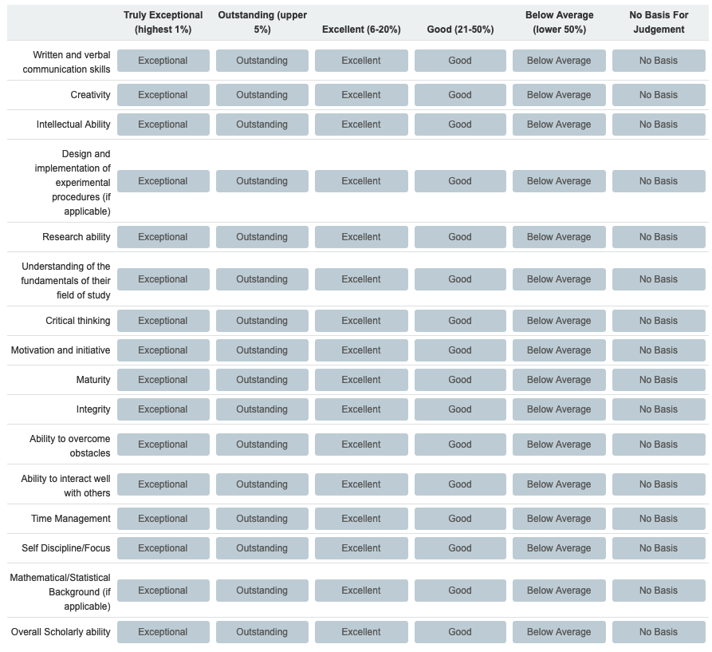

- Published: Thursday, November 28, 2019
- Updated: Monday, July 27, 2020
Hello!
If you are reading this, you have requested a letter of recommendation. (Or for some weird reason you are reading my website.) Tentatively, I will do so, but I would like to make you aware of a set of policies that I adhere to when navigating the letter writing process. Please read all of the following carefully. Letter writing usually happens during breaks or the busy parts of the semester, so you will need to communicate effectively and quickly. Please keep email communications concise. Bullet points are better than paragraphs. When emailing:
- Please use your Illinois account if you still have access.
- Use the subject line: [Recommendation Request] - Your Name Here
First, you need to know a little bit about me. I am a Teaching Assistant Professor. This is a non-tenure track position, where I spend the majority of my time focused on teaching, as opposed to research. You need to know this because it (negatively) effects the strength of my letter. It also makes a letter from me less appropriate for PhD programs.
Next, the most important thing you need to know: I will only write about information that I obtained myself. That is, I will not take suggestions from the applicant about what to write. I may request some information from you, but it will mostly be used to help my memory. It is possible that the only information I know about you is the course you took with me, the grade you received, and how you ranked compared to your peers. I will often be asked to submit the information seen in the image below. Unless we discuss otherwise, I will likely select “No Basis for Judgement” for many or possibly all categories. I am willing to write a letter that says this, but this is not a strong letter.

Also, unless we have directly worked together beyond a student-teacher relationships, a letter from me will likely not be individualized to specific programs. Instead, I will use the same letter for all applications. If you have worked on an individual research project or served as course staff, you can expect a much more detailed letter that may be tailored to individual programs.
Finally, in order for me to agree to write a letter, three conditions must be satisfied. (Exceptions are possible if discussed in person well in advance of application time.)
- You must have completed a course with me.
- You must have received a grade of A or A+.
- Note that obtaining a grade of A does not guarantee a high rank in the class.
- You must give at least two weeks notice. Earlier is better.
If you have any questions about the above policies, you should come see me in person if at all possible. (In reality, it would be best to ask me for a letter in person.)
If you have read the above and would like to proceed, please read on.
Email Number One
After you have read the information above, send an email with the following information:
- Confirmation that you agree to my terms and you would like me to write you a letter.
- State the following: “I agree that David Dalpiaz can release my grade information as a part of the letter writing process.”
- Your name.
- Your full legal name.
- Your preferred name. That is, the name you would like me to use.
- Your preferred pronouns.
- A (tentative) list of schools as a bulleted list. You should verify this information is correct. Whatever you write here, I might write into your letter. I will not proofread your work. Use exact, proper names. For example do not use “MS”, use “Master of Science,” or whatever the school calls the degree. Use full school names, for example do not use “UMich,” use “University of Michigan.” If you are applying to multiple programs at the same school, you should give each a separate bullet. You should list:
- Name of School (i.e. University of Illinois at Urbana-Champaign)
- Name of Program (i.e. Statistics)
- Name of Degree (i.e. Master of Science)
- Deadline
- List of classes we have shared. You should list:
- Course number (i.e. STAT 400)
- Full name of course (i.e. Statistics and Probability I)
- Semester (i.e. Fall 2014)
- Grade (i.e. A+)
- (Optional) A photo of yourself. Sometimes it is helpful to put a face with a name. I’ve had a lot of students!
- (Optional) A CV.
While adding my information to applications, please note:
- When listing me as a reference, I expect you to fill in as much information as possible. See my Statistics Faculty page for any of that information: https://stat.illinois.edu/directory/profile/dalpiaz2
- If asked for a phone number, use:
(217) 333-2167
- You must waive your right to view the letter. This doesn’t mean I’m going to write anything bad, I’m simply following the lead of other faculty in the department.
- Be aware that you do not need to complete your application to list me as a reference. With that in mind, please add me ASAP so I can complete them whenever I have time.
- Please attempt to send as many notifications emails in one group. Receiving these emails on the same day will help me track them.
Email Number Two
After I have been added as a reference to each of your applications, send an email letting me know that you have done so, with the following information:
- Everything requested in the original email which now includes a finalized school list.
- Assume that I will delete your original email after you send this email.
Some closing thoughts:
- Deadlines are your responsibility, so you will want to keep in touch. Do not hesitate to send reminders.
- I often receive hundreds of notification emails about letters I need to submit. The probability of me missing one or forgetting something is high.
- At the end of this process, please share the results with me! I write so many letters, but rarely am I told about the result.
- Apologies if these policies seem authoritarian and harsh. Given my difficulty denying letter requests, I often end up writing a lot of letters. These policies were created to become efficient enough to process as many letters as possible.
Home